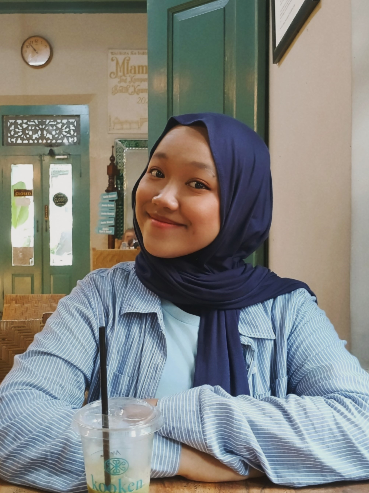

Nadia's Profile
Haloo semua!, aku Nadia pelajar aktif yang memiliki passion tinggi dalam bidang akademik, kepenulisan, inovasi, dan sosial. Aku adalah pribadi yang kompetitif dalam perlombaan akademik, kreatif dalam menciptakan inovasi, dan peduli dalam kegiatan sosial.
Identitas & Riwayat Hidup
Data Pribadi
Alamat
Jl. Abdulah
Kelurahan Sumbersawit
Kecamatan Sidorejo
Kabupaten Magetan, Jawa Timur 63352
Riwayat Sekolah
SDN WIDOROKANDANG
SMPN 1 MAGETAN
SMAN 1 MAGETAN
"Never expect anything from anyone"
Prestasi Akademik
Juara 1 Lomba Menulis Esai AMPIBHI
Tingkat Karesidenan Madiun 2024
Menggagas solusi permasalahan konservasi tanahPeserta OPSI 2024
Olimpiade penelitian siswa paling bergengsi di Indonesia
Penelitian: "BRIANKA: Briobriket Berbahan Dasar Kulit Durian dan Kakao "Peserta OSNK Matematika 2025
Sains & Matematika 2025
Kompetisi antar SMA se-Kabupaten MagetanAwardee Beasiswa Ilimac Batch 8
Beasiswa tahunan dari yayasan Ilimac untuk siswa berprestasi
Diperuntukkan siswa di jenjang SMAPengalaman Berorganisasi
Ketua ROHIS AKHWAT
SMAN 1 MAGETAN
Menjadi ketua kepengurusan kegiatan kerohanian keputrian.
Bendahara Ekstrakurikuler ECC
SMAN 1 MAGETAN
Mengorganisir jalan keuangan dan berjalannya KAS mingguan Ekstrakurikuler.
Volunteer "Kelas Bahasa Inggris Perpustakaan Daerah"
Komunitas Pengajar Kelas Perpustakaan Magetan
Mengajar Bahasa Inggris basic untuk anak-anak Paud dan TK.
Moto Hidup
"Just focus on something that u can control"
Tidak semua hal di dunia ini ada di bawah kendali kita. Belajar untuk menerima dan mengontol diri adalah sikap paling bijak untuk menghadapi ketidakadilan dunia.
"Set your mindset first"
Ubah caramu berpikir dan perluas perspeksimu akan sesuatu
Minat dan Hobi
Membaca Buku
Buku beragam genre dari self Improvement, novel fantasy, dan english literature.
Mendengarkan musik
Genre Rock dari Gun n Roses terutama lagu favorit saya Sweet Child O Mine.
Baking
Membuat kue dari resep resep baru.
Kegiatan Sosial
Mengajar anak-anak, membuat esai lingkungan, dan proker ROHIS salur amal ke panti asuhan.